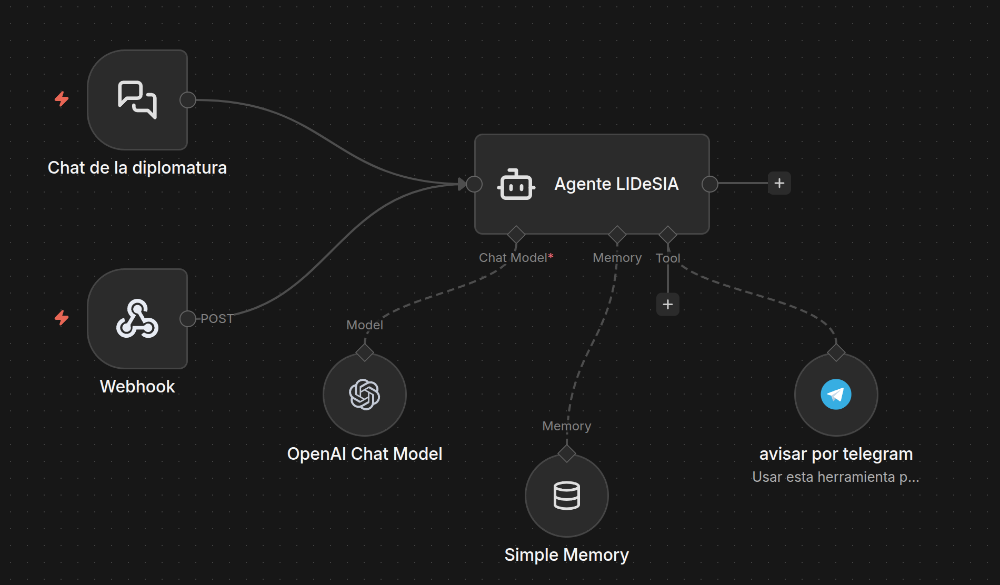
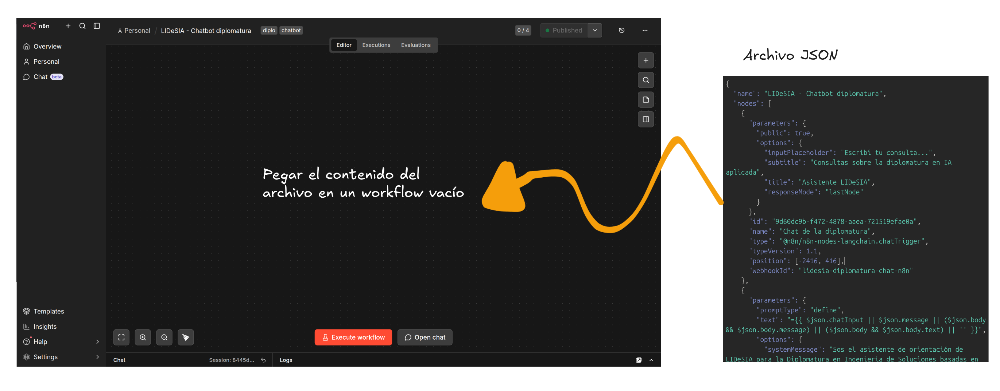
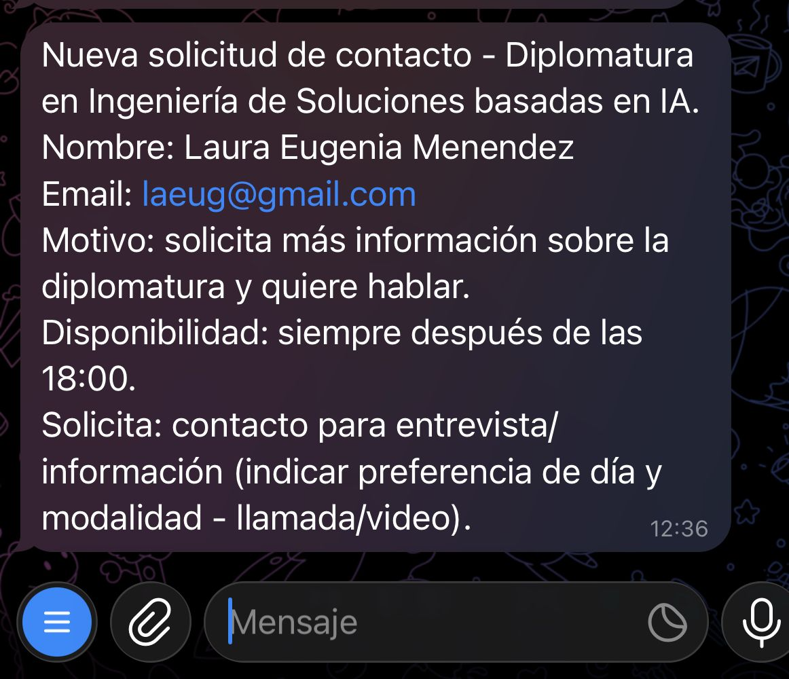

Alguien completa un formulario y llega un aviso por mail.
Clase práctica · antes del chatbot
n8n: automatizar con piezas visibles
Primero entendemos la idea: qué problema resuelve n8n, cuándo conviene usarlo y por qué se parece a armar un circuito con componentes.
Automatización
Componentes
IA
Chatbot
Idea base
n8n conecta pasos
Un paso recibe información, hace algo y se la pasa al siguiente. En vez de escribir todo el programa, armamos un flujo con bloques.
Algo pasa
→
n8n decide
→
Sale una acción
Ejemplos cotidianos
Automatizaciones simples
Se agrega una fila y n8n manda un mensaje a Telegram.
Se reserva una entrevista y se crea un recordatorio.
Una persona pregunta y el flujo decide si responde o deriva.
No todo se resuelve igual
Distintas formas de resolver un problema
ManualBueno para empezar, malo cuando se repite mucho.
PythonMuy flexible, pero hay que programar y mantener el código.
n8nRápido para conectar servicios y ver el flujo completo.
Python + IAÚtil cuando hay lógica especial, texto o datos complejos.
n8n + códigoBuena mezcla: flujo visible con pequeñas partes programadas.
Herramienta listaA veces lo mejor es usar algo que ya existe.
Cuándo elegir qué
La pregunta no es “qué está de moda”
La pregunta es: cuánto control necesito, cuánto tiempo tengo y quién va a mantenerlo después.
Más rápidon8n
Más control finoPython
Mejor para probar ideasn8n + IA
Mejor para producto grandeAplicación propia
Analogía
Como un simulador de electrónica
En electrónica llevamos el problema a componentes: fuente, sensor, resistencia, compuerta, salida. En n8n hacemos algo parecido: entrada, decisión, transformación y acción.
Entrada
Decisión
Acción
Resultado
Programar con bloques
Un flujo también es un programa
No escribimos tantas líneas, pero sí decidimos el orden, las condiciones, los datos que entran y lo que sale.
Disparador¿Qué inicia el flujo?
Transformación¿Qué cambiamos de los datos?
Decisión¿Qué camino sigue?
Acción¿Qué hacemos al final?
IA y control
Vibecoding puede ser una caja negra
Cuando pedimos “haceme un programa”, puede funcionar, pero muchas veces no sabemos qué quedó adentro ni dónde tocar si falla.
“Haceme una app”
→
¿Qué hay adentro?
La ventaja de n8n
Con n8n vemos el camino
El flujo queda dibujado. Podemos abrir cada bloque, ver qué recibió, qué respondió y dónde se rompió.
Mensaje
→
Agente
→
Respuesta
↘
Telegram
Cómo lo tengo yo
Mi n8n vive en un servidor
ServidorComputadora prendida en internet.
→
DominioUna dirección pública, por ejemplo n8n.mnsosa.com.
→
Web aparteLa página puede estar en otro servidor y llamar a n8n.
Esto sirve para algo real y público, pero no es ideal para una primera clase: todos dependerían de mi servidor.
Cómo lo van a tener ustedes
Hoy todo queda en cada computadora
Tu computadoraCorre n8n local.
→
Tu navegadorAbre n8n y la web de prueba.
→
Tu flujoPodés romper, probar y volver a empezar.
No necesitamos publicar nada en internet para aprender el concepto.
Ahora sí: el ejercicio
Vamos a construir un chatbot
1Recibe preguntas
Desde una web simple o desde el chat interno de n8n.
2Usa información oficial
Responde sobre la diplomatura sin inventar datos.
3Recuerda la charla
Mantiene una sesión mientras conversamos.
4Avisa por Telegram
Cuando alguien quiere contacto humano.
Mapa del chatbot
Qué piezas vamos a unir
Web de prueba
la ve el usuario
la ve el usuario
→
Entrada en n8n
recibe la pregunta
recibe la pregunta
→
Agente
piensa la respuesta
piensa la respuesta
Modelo de IA
Memoria
Telegram

Primer paso práctico
Levantar n8n local
cd n8n-workshops
docker compose up -d
# abrir en el navegador
http://localhost:5678Docker nos permite usar n8n sin instalarlo a mano.
Si algo sale mal, podemos apagarlo y volver a levantarlo.
Segundo paso práctico
Importar el flujo base
Chat interno
Entrada web
Agente LIDeSIA
Modelo de IA
Memoria
Telegram
Archivo: workflows/lidesia-chatbot-diplomatura.json.

Diseño del comportamiento
El bot no debe inventar
La IA escribe, pero nosotros ponemos reglas. El asistente usa la información oficial de la diplomatura y reconoce cuando falta un dato.
Reglas simples
- Responder claro y corto.
- No asumir que la persona sabe programar.
- No inventar precios ni requisitos.
- Derivar cuando haga falta una persona.
Contacto humano
Telegram es la salida de emergencia
Si alguien pide hablar con LIDeSIA, el agente puede avisar por Telegram. Antes tiene que pedir datos mínimos: nombre, mail y motivo.
¿Quiere hablar con alguien?
Sí
¿Tenemos nombre y mail?
Sí
Mandar aviso

Probar con intención
Preguntas para probar
¿Cuándo empieza y cuánto dura?
Soy docente y no programo, ¿me sirve?
¿Cuánto sale exactamente?
Soy Ana, mi mail es ana@example.com y quiero hablar con alguien.
Lo más importante
Automatizar no es desentenderse
El flujo ayuda, pero seguimos siendo responsables de qué responde, a quién deriva y qué datos maneja.
ClaridadQue la persona entienda la respuesta.
LímitesQue el bot diga “no lo sé” cuando corresponde.
ControlQue podamos revisar cada paso del flujo.
Cierre
n8n como puente
n8n no reemplaza aprender a pensar un sistema. Nos da una forma rápida y visible de pasar de una idea a un flujo funcionando.
Entender el problema
Elegir la herramienta
Armar componentes
Probar límites
github.com/Diplomatura/clases-n8n